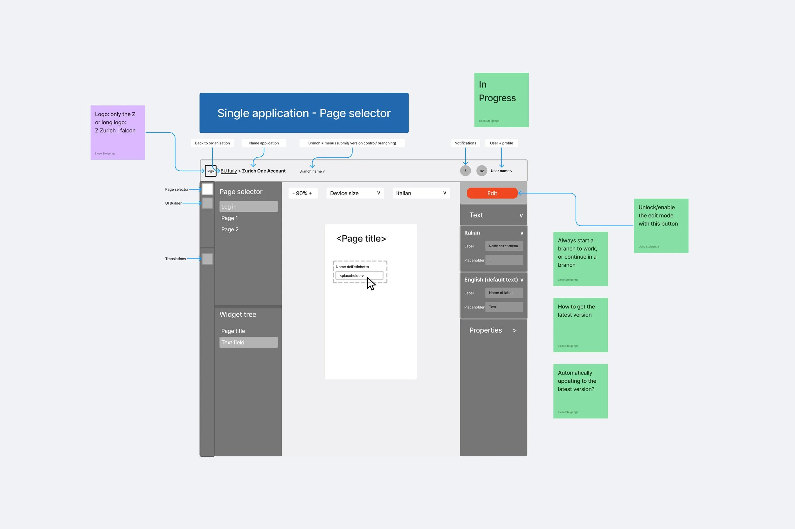
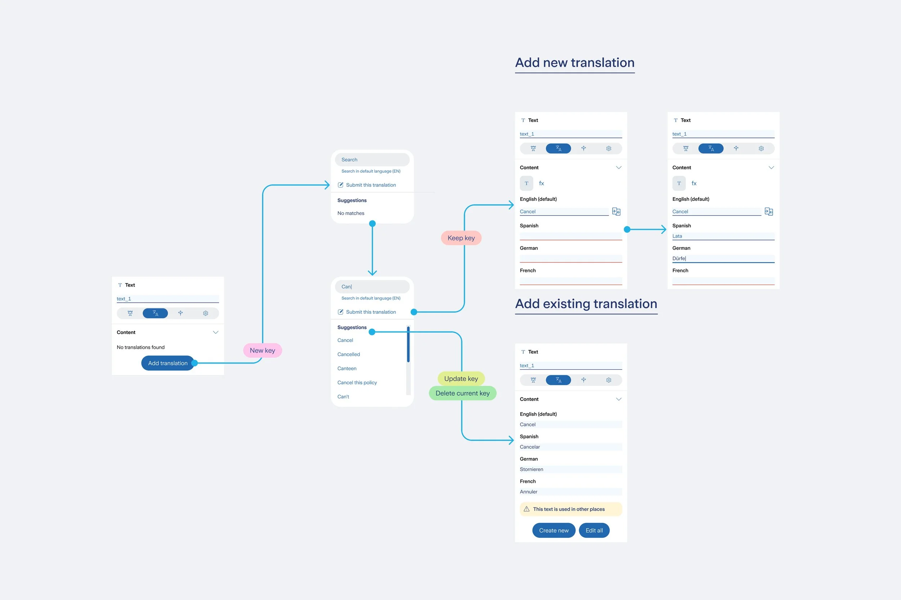
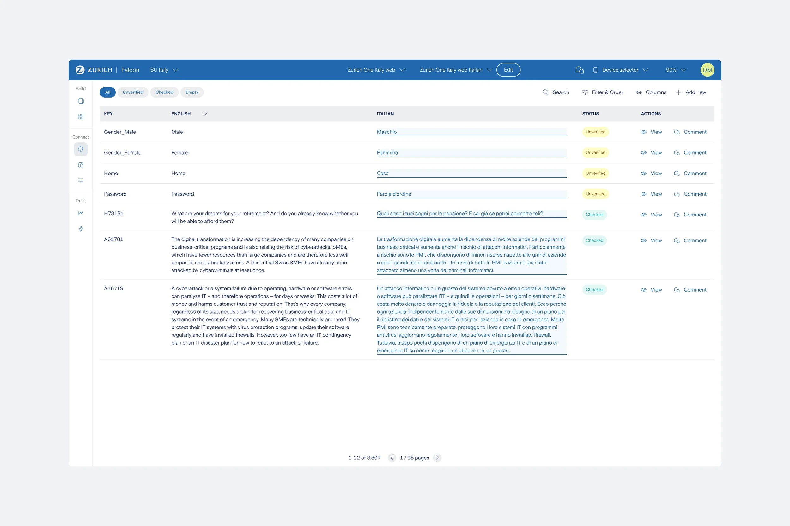
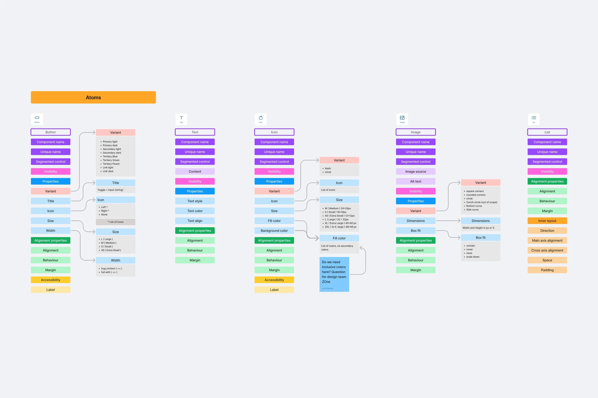
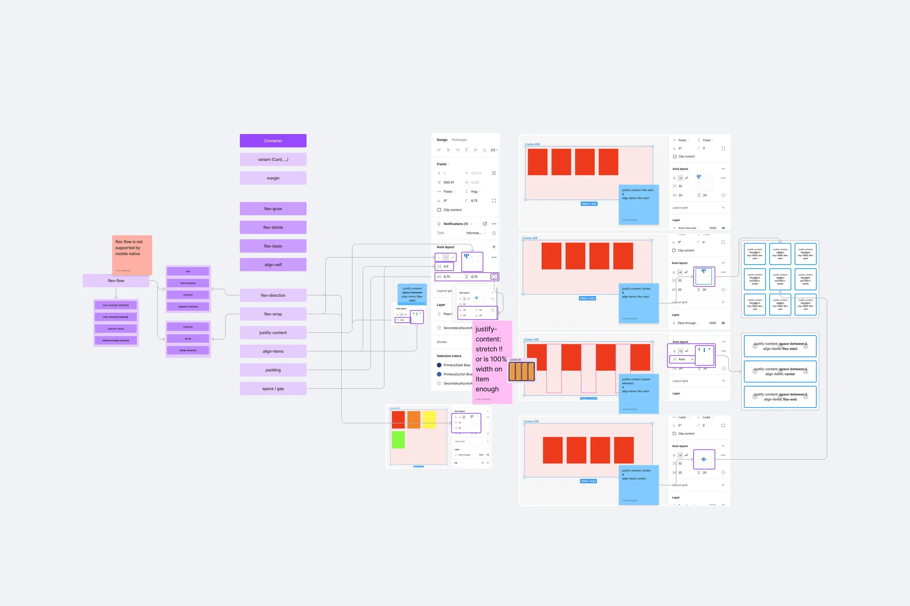
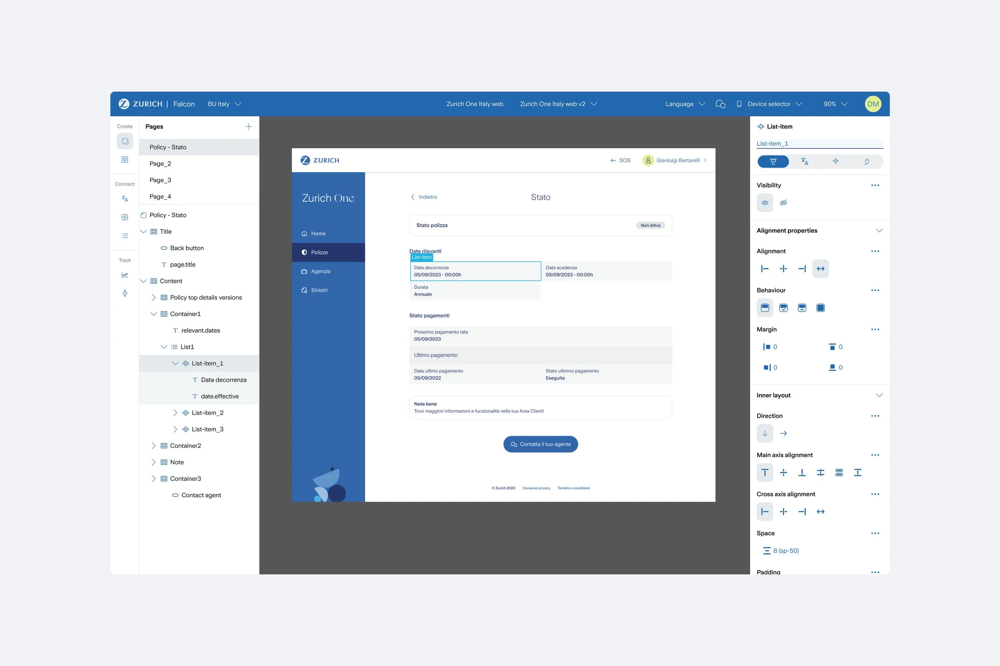
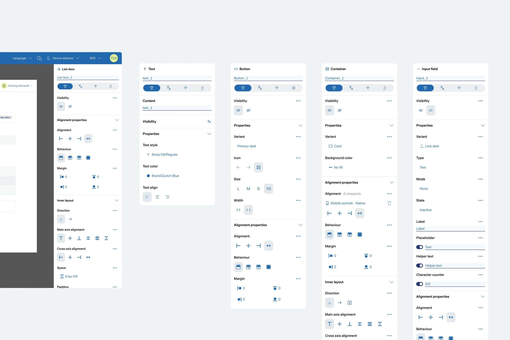
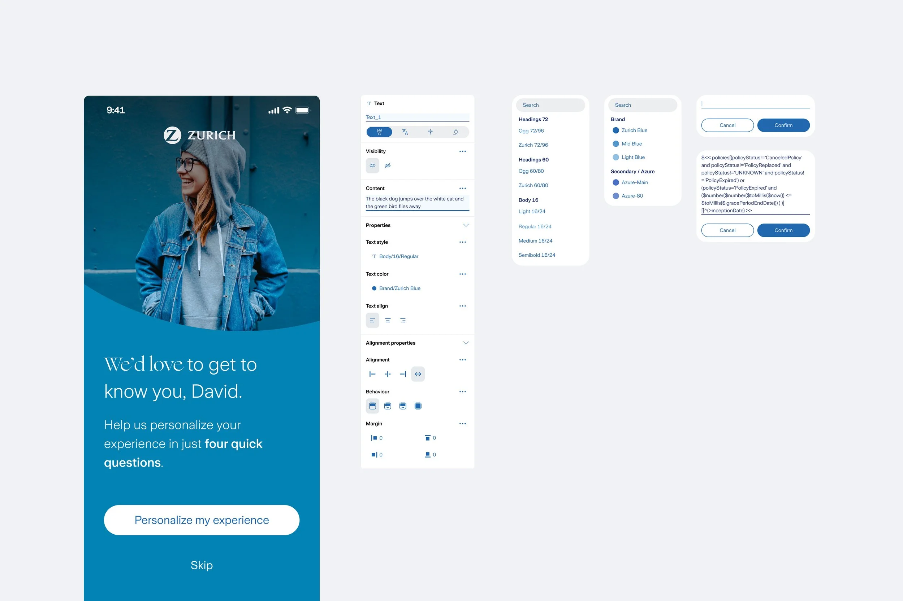
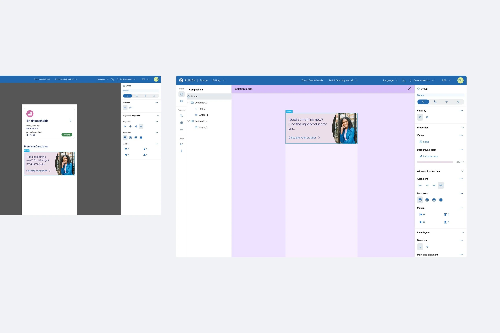
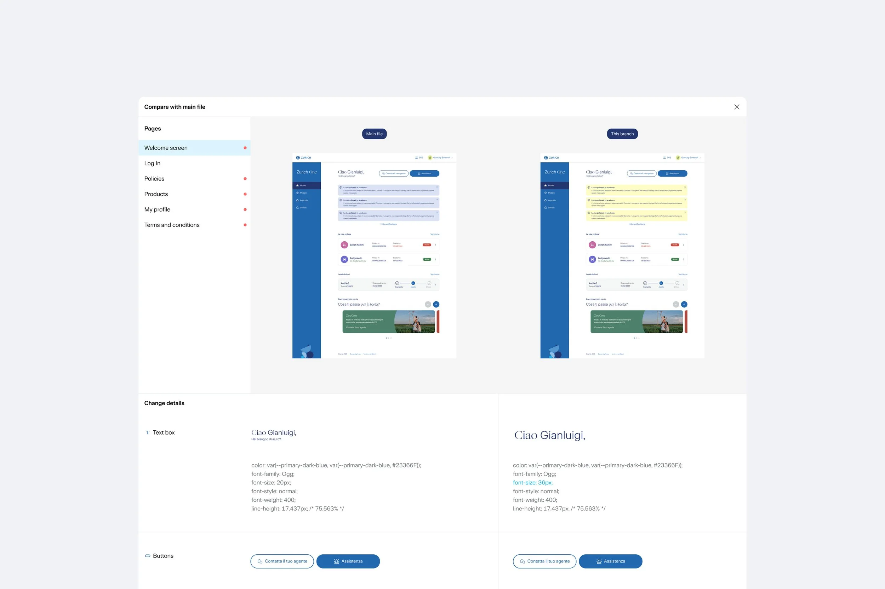

Overview
Falcon is Zurich's internal SaaS platform for building digital products end-to-end, from design to implementation. I led the platform's user experience and design, collaborating closely with designers and technical teams.
Falcon is Zurich's internal SaaS platform for building digital products end-to-end, from design to implementation. I led the platform's user experience and design, collaborating closely with designers and technical teams.
8 business units
Have adopted the platform.
287 licences
Can be eliminated, saving costs and streamlining processes.
27%
Fewer Consistency Queries thanks to the design system integration.

Context
Zurich has many teams across different countries working to build digital experiences. Maintaining consistency among them is no easy task, and additionally the cost of licenses for design and development tools represents a significant expense for the company. This led to the idea of creating a platform that can be used by different countries, with the goal of simplifying and unifying design, implementation, and customization.
Finding solutions
The first step was to design a simple tool for a globally necessary task: managing languages. A platform where each country can adapt existing products to their local language.




Going further
We encountered a challenge: different countries not only needed to update the language but also to customize functionalities, as not all products and services are offered in every market. This created the need to gradually add more and more customization options.



Dynamic panels
The left and right panels adapt dynamically to the user's current task, displaying only the tools that are relevant at each moment.




Responsive Breakpoints
The platform supports responsive breakpoints that allow users to preview and design experiences across different screen sizes. This ensures layouts adapt seamlessly to multiple devices.

Isolation mode
The isolation feature allows users to focus on and edit a container that is nested within another container. By temporarily isolating the selected element from its surrounding structure, the interface reduces visual noise and makes precise editing faster and more intuitive.

Design System Integration
The platform is fully integrated with the design system, ensuring consistency and scalability across all experiences.

Branches
Branches allow teams to work on multiple versions of the same experience in parallel. Designers and developers can safely explore ideas, test changes, and iterate independently.



Force display skeleton
This feature is focused on improving how users perceive waiting time during loading. Instead of leaving users with an empty screen or an abstract spinner, we show skeleton placeholders that mirror the layout of the final content.

Customers database
This feature allows business units to easily manage and organize portal customers database. Each country can view, search, filter, and update customer information through a clear and structured interface, making it faster to find the right customer and take action.

Business impact
8 BU
Eight business units (countries) have adopted the platform.
287 licenses
Third-party software accounts can be eliminated, saving costs and streamlining processes.
27%
Fewer Consistency Queries thanks to the design system integration.
Conclusions
Designing for designers and implementing for developers presented significant challenges. It was inevitable (and necessary) to face comparisons, especially when introducing a new platform while teams were already comfortable with existing, well-established tools. Thanks to the collaboration of the entire team, we have made significant progress. Ideas flowed constantly—new proposals and innovations every day—all aimed at building something powerful and lasting. We pushed the design system to its limits, which helped us identify weaknesses, improve it, and scale effectively. The next steps focus on continuous improvement. We are currently exploring how to integrate customer support into the same platform, leveraging the customer databases from each business unit, along with many other exciting ideas.
Note: some data here has been adjusted for confidentiality and may not be fully exact.